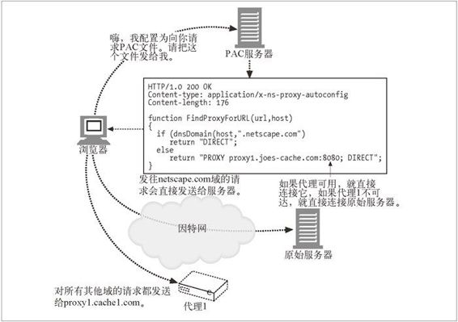
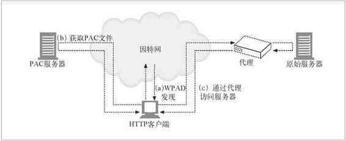

20.5 代理的重定向方法
到目前为止，我们已经讨论过通用的重定向方法了。（出于潜在的安全考虑）内容也可能需要通过各种代理来访问，或者网络中可能有一个客户端可利用的代理缓存。（因为获取已缓存的内容很可能要比直接连接到原始服务器快得多。）
但 Web 浏览器客户端怎么才会知道要连接到某个代理上去呢？可以用 3 种方法来判断：显式的浏览器配置，动态自动配置以及透明拦截。我们会在本节中讨论这 3 种技术。
代理可以顺次将客户端请求重定向到另一个代理上去。比如，没有缓存此内容的代理缓存可能会选择将客户端重定向到另一个代理缓存。这样一来，响应就会来自与客户端请求资源的地址不同的另外一个地址，所以，我们还会讨论几种用于对等代理 - 缓存重定向的协议：ICP、CARP 和 HTCP。
20.5.1 显式浏览器配置
大多数浏览器都可以配置为从代理服务器上获取内容——浏览器中有一个下拉菜单，用户可以在这个菜单中输入代理的名字或 IP 地址以及端口号。然后浏览器的所有请求都可以发送给这个代理。有些服务提供商不允许用户配置普通浏览器来使用代理，它们会要求用户下载事先配置好的浏览器。这些浏览器知道所要使用的代理的地址。
显式浏览器配置有以下两个主要的缺点。
配置为使用代理的浏览器，即使在代理无法响应的情况下，也不会去联系原始服务器。如果代理崩溃了，或者没有正确配置浏览器，用户就会遇到连接方面的问题。
对网络架构进行修改，并将这些修改通知给所有的终端用户都是很困难的。如果服务提供商要添加更多的代理服务器，或者使其中一些退出服务，用户都要修改浏览器代理设置。
20.5.2 代理自动配置
显式配置浏览器使其联系特定的代理，这样会限制网络架构方面的变动，因为它是靠用户来介入并重新配置浏览器的。自动配置方式可以动态配置浏览器，连接到正确的代理服务器，以解决这个问题。这种方法已经实现了，被称为代理自动配置（PAC）协议。PAC 是网景公司定义的，网景公司的 Navigator 和微软的 Inernet Explorer 浏览器都支持此协议。
PAC 的基本思想是让浏览器去获取一个称为 PAC 的特殊文件，这个文件说明了每个 URL 所关联的代理。必须配置浏览器，为这个 PAC 文件关联一个特定的服务器。这样，浏览器每次重启的时候都可以获取这个 PAC 文件了。
PAC 文件是个 JavaScript 文件，其中必须定义函数：
function FindProxyForURL(url, host)
如下所示，浏览器要为请求的每条 URL 调用这个函数：
return_value = FindProxyForURL(url_of_request, host_in_url);
其返回值为一个字符串，用来说明浏览器应该到哪里请求这个 URL。返回值可以是所关联的代理名称列表（比如，PROXY proxy1.domain.com，PROXY proxy2.domain.com），或者是字符串 "DIRECT"，这个字符串说明浏览器应该绕开所有的代理，直接连接原始服务器。
图 20-10 给出了浏览器对 PAC 文件的请求以及响应此请求的操作顺序。在本例中，服务器回送了带有 JavaScript 程序的 PAC 文件。JavaScript 程序中有一个 FindProxyForURL 函数，用来告知浏览器，如果所请求的URL 的主机位于 netscape.com 域中，就直接与原始服务器联系，所有其他请求都连接到proxy1.joescache.com。浏览器会为它所请求的每个 URL 调用这个函数，并根据此函数返回的结果进行连接。

图 20-10 代理自动配置
PAC 协议是相当强大的：JavaScript 程序可以请求浏览器根据大量与主机名相关的参数来选择代理，比如 DNS 地址和子网，甚至星期几或具体时间。只要服务器中的 PAC 文件保持更新，能反映代理位置的变化，PAC 就允许浏览器根据网络结构的变化自动与合适的代理进行联系。PAC 存在的主要问题是必须要对浏览器进行配置，让它知道要从哪个服务器获取 PAC 文件，因此它就是一个全自动配置的系统。下一节讨论的 WPAD 解决了这个问题。
就像那些预配置浏览器一样，现在一些主要的 ISP 都在使用 PAC。
20.5.3 Web代理自动发现协议
WPAD（Web 代理自动发现协议）的目标是在不要求终端用户手工配置代理设置，而且不依赖透明流量拦截的情况下，为 Web 浏览器提供一种发现并使用附近代理的方式。由于可供选择的发现协议有很多，而且不同浏览器的代理使用配置也存在差异，因此定义 Web 代理自动发现协议时，普通的问题会被复杂化。
本节包含了一个经过缩略，且重新组织过的 WPAD 因特网草案版本。现在，这个草案是作为 IETF 的 Web 中间人工作组的一部分开发的。
PAC文件自动发现
WPAD 允许 HTTP 客户端定位一个 PAC 文件，并使用这个 PAC 文件找到适当的代理服务器的名字。WPAD 不能直接确定代理服务器的名字，因为这样就无法使用 PAC 文件提供的附加功能了（负载均衡，请求路由到一组服务器上去，故障时自动转移到备用代理服务器等）。
如图 20-11 所示，WPAD 协议发现了 PAC 文件 URL，这个 URL 也被称为配置 URL（CURL）。PAC 文件执行了一个 JavaScript 程序，这个程序会返回合适的代理服务器地址。

图 20-11 WPAD 确定了 PAC URL，这个 PAC 文件确定了代理服务器
实现 WPAD 协议的 HTTP 客户端：
用 WPAD 找到 PAC 文件的 CURL；
根据这个 CURL 获取 PAC 文件（又名配置文件或 CFILE）；
执行 PAC 文件来确定代理服务器；
向 PAC 文件返回的那个代理服务器发送 HTTP 请求。
WPAD算法
WPAD 使用了一系列资源发现技术来确定适当的 PAC 文件 CURL。并不是所有的组织都可以使用所有技术的，所以 WPAD 指定了多种发现技术。在成功获得 CURL 之前，WPAD 客户端会一个个地尝试每种技术。
当前的 WPAD 规范按序定义了下列技术：
DHCP（动态主机配置协议）；
SLP（服务定位协议）；
DNS 知名主机名；
DNS SRV 记录；
DNS TXT 记录中提供的服务 URL。
在这 5 种机制中，要求 WPAD 客户端必须支持 DHCP 和 DNS 知名主机名技术。我们会在后继小节中提供更多的细节。
WPAD 客户端会按顺序用上面提供的发现机制发送一系列资源发现请求。客户端只会尝试它们所支持的机制。只要某次发现尝试成功了，客户端就会用得到的信息来构建 PAC CURL。
如果从那个 CURL 上成功获取到 PAC 文件，这个过程就结束了。如果没有，客户端就从它在预定义的资源发现请求系列里中断的地方开始恢复。如果尝试了所有的发现机制之后，都没有获取到 PAC 文件，WPAD 协议就失败了，客户端会配置为不使用代理服务器。
客户端首先会尝试 DHCP，然后是 SLP。如果没有获取到 PAC 文件，客户端会继续执行那些基于 DNS 的机制。
客户端会在 DNS SRV、知名主机名和 DNS TXT 记录等方法中循环多次。每次都使 DNS 查询的 QNAME 变得越来越不具体。通过这种方式，客户端就可以定位出尽可能具体的配置信息，但也可能会转而使用一些不太具体的信息。每次 DNS 查找都会在 QNAME 前加上 wpad，用以说明请求的资源类型。
考虑主机名为 johns-desktop.development.foo.com 的客户端。下面是一个完整的 WPAD 客户端会执行的发现尝试顺序：
DHCP；
SLP；
用 QNAME=wpad.development.foo.com 进行 DNS A 查找；
用 QNAME=wpad.development.foo.com 进行 DNS SRV 查找；
用 QNAME=wpad.development.foo.com 进行 DNS TXT 查找；
用 QNAME=wpad.foo.com 进行 DNS A 查找；
用 QNAME=wpad.foo.com 进行 DNS SRV 查找；
用 QNAME=wpad.foo.com 进行 DNS TXT 查找。
说明整个操作过程的详细伪代码请参见 WPAD 规范。后面的小节将讨论两种必备机制——DHCP 和 DNS A 查找。有关 CURL 发现方法的其他详细内容参见 WPAD 规范。
用DHCP进行CURL发现
要使用这种机制，就必须将 CURL 存储在 WPAD 客户端可以查询的 DHCP 服务器上。WPAD 客户端可以通过向 DHCP 服务器发送 DHCP 查询来获取 CURL。（如果 DHCP 服务器中配置了这种信息，）就可以在 DHCP 可选代码 252 中获取 CURL。所有 WPAD 客户端实现都必须支持 DHCP。RFC 2131 详细介绍了 DHCP 协议。现存的 DHCP 选项列表参见 RFC 2132。
如果 WPAD 客户端已经在其初始化过程中执行了 DHCP 查询，DHCP 服务器可能就已经提供了那个值。如果无法通过客户端 OS API 获得这个值，客户端就向 DHCP 服务器发送一条 DHCPINFORM 报文，以获取这个值。
WPAD 的 DHCP 可选代码 252 为 STRING 类型，可以是任意长度。这个字符串中包含了一个指向适当 PAC 文件的 URL。比如：
"http://server.domain/proxyconfig.pac"
DNS A记录查找
要让这种机制工作，就必须将合适的代理服务器的 IP 地址存储在 WPAD 客户端可以查询的 DNS 服务器上。WPAD 客户端会向 DNS 服务器发送一个 A 记录查询，以获取 CURL。成功查询的结果中会包含合适的代理服务器的 IP 地址。
WPAD 客户端实现必须支持这种机制。这应该是很简单的，因为它只要求基本的 DNS A 记录查找。用知名 DNS 别名进行资源发现的详细过程请参见 RFC 2219。对 WPAD 来说，规范使用了“wpad”的“知名别名”来进行 Web 代理自动发现。
客户端执行了下列 DNS 查找：
QNAME=wpad.TGTDOM., QCLASS=IN, QTYPE=A
成功的查找中包含了 IP 地址，WPAD 客户端根据这个地址构建 CURL。
获取PAC文件
只要创建了候选的 CURL，WPAD 客户端通常都会向 CURL 发送一条 GET 请求。发出请求时，WPAD 客户端必须要发送一些带有适当 CFILE 格式信息的 Accept 首部，这些 CFILE 格式都是它们所能处理的。比如：
Accept: application/x-ns-proxy-autoconfig
而且，如果 CURL 的结果是要进行重定向，客户端就必须跟随这些重定向到其最终目的地。
何时执行WPAD
至少要在出现以下情况的时候进行 Web 代理自动发现。
在 Web 客户端启动的时候——WPAD 只在第一个实例启动的时候执行。后面的实例会继承这种设置。
只要有来自网络栈的通知，就说明客户端主机的 IP 地址改变了。
哪个选项在其环境中有意义，Web 客户端就可以选择哪个。而且，客户端还必须根据 HTTP 的过期时间，为之前下载的 PAC 文件的过期时间尝试一个发现周期。PAC 文件过期时，客户端遵循过期时间，重新运行 WPAD 过程是很重要的。
如果 PAC 文件没有提供替换方案，在当前配置的代理失效的情况下，客户端还可以选择重新运行 WPAD 过程。
只要客户端决定使当前的 PAC 文件失效，就必须重新运行整个 WPAD 协议，以确保它会发现当前正确的 CURL。具体来说，就是协议不能有条件地获取 PAC 文件的 If-Modified-Since。
WPAD 协议广播与 / 或多播通信可能需要大量的网络环回时间。WPAD 协议的激活频率不应该高于上面指定的频率（比如在每次获取 URL 时进行一次）。
WPAD欺骗
WPAD 的IE 5 实现允许 Web 客户端在没有用户干预的情况下，自动检测代理设置。WPAD 使用的算法会在全称域名前加上主机名“wpad”，并会逐渐删除子域名，直到它找到能够响应主机名的 WPAD 服务器，或到达第三级域名。比如，域 a.b.microsoft.com 中的 Web 客户端会先查询wpad.a.b.microsoft、wpad.b.microsoft.com，然后再查询wpad.microsoft.com。
这样会暴露出一个安全漏洞，因为在国际应用（及其他特定的配置）中，第三级域名可能是不可信的。恶意用户可以建立一个 WPAD 服务器，并提供他选中的代理配置命令。后继（5.01 及以后）的 IE 版本修正了这个问题。
超时
WPAD 会经过多个级别的发现，客户端必须确保每个阶段都有时限保证。可能的情况下，将每个阶段都限制在 10 秒以内是比较合理的，但实现者可能会选择其他更适合其网络特性的值。比如，运行在无线网络上的设备实现，由于带宽较低或时延较长，可能就会使用更大的时限。
管理者的考虑
管理者至少应该在其环境中配置 DHCP 或 DNS A 记录查找方式中的一种，因为只有这两种方式是所有兼容客户端都必须实现的。除此之外，通过配置环境使其支持搜索列表中顺序靠前的机制，可以缩短客户端的启动时间。
使用这种协议结构的主要动力之一是支持客户端定位附近的代理服务器。在很多环境中，都会有多个代理服务器（工作组、公司网关、ISP、骨干网等）。
在 WPAD 框架结构中，可以在很多地方确定代理服务器是否“邻近”。
不同子网的 DHCP 服务器会返回不同的答案。还可以根据客户端的 cipaddr 字段或客户端标识符选项作出决定。
可以对 DNS 服务器进行配置，使其为不同的域名后缀（比如，QNAME wpad.marketing.bigcorp.com 和 wpad.development.bigcorp.com）返回不同的 SRV/A/TXT 资源记录（RR）。
处理 CURL 请求的 Web 服务器会根据 User-Agent 首部、Accept 首部、客户端 IP 地址 / 子网 / 主机名、附近代理服务器的拓扑分布等作出决定。可能由处理 CURL 的 CGI 可执行文件进行这种处理。如前所述，甚至可能是某个处理 CURL 请求的代理服务器来作出这些决定。
PAC 文件的表达能力可能足以在客户端运行时从一组候选的代理服务器中进行选择。CARP 就是在此基础上实现缓存阵列的。PAC 文件可以计算出到一组候选代理服务器的网络距离（或其他合理的度量方式），并选择“最近”或“响应最积极”的服务器，这并不是什么不可思议的事情。